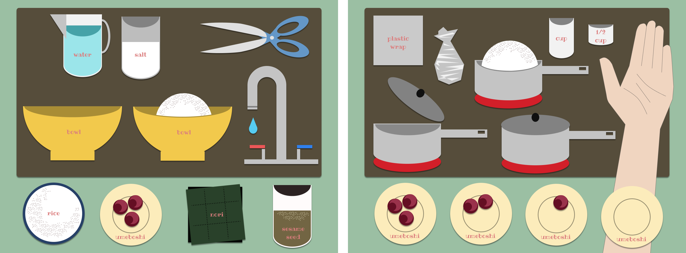

SUMMARY
Chef Koochooloo is a National Science
Foundation award-winning startup that claims to teach children Math,
Science, Language Arts, and Social Studies with a mobile app. I was
in charge of creating the curriculum and testing this out to
students on sites. I was also responsible for creating the
mid-fidelity mockups that I then passed on to a coworker to turn
into a high-fidelity mockup.
INSTRUCTIONAL DESIGN & UI | UX INTERNSHIP
CURRICULUM DESIGN
I created ten recipes, each a simplified dish from a different
country, and incorporated a curriculum designed with 4th grade
students in mind. In theory, the students will learn math and science from
preparing the dish. Students can also practice reading comprehension
skills by reading a short story with the app’s avatar, which also
includes a geography and social studies lesson.
USER TESTING & RESEARCH
I tested the initial fourth grade curriculum by teaching them in
after school programs. I was assigned to the following:
St Andrew's
Elementary School
5-10 kids
St Andrew's
Middle School
5-10 kids
Mariano Castro
Grade K-1
15-20 kids
Mariano Castro
Grade 2-3
15-20 kids
I observed how the students interacted with the course, and made
note of any issues that came up within the existing curriculum. I
also worked with another UX Designer, who came in as a researcher,
to make our assessments on the efficacy of the program.
Our assessment was that it is challenging to cover multiple
subjects (including English, Social Studies, Math, Science, and
Global Competency) in the course of one class, which only lasts
an hour. We both agreed that it would be easier for both students
and teachers if the focus was just limited to one subject.
MID FIDELITY
VIEW PROTOTYPE
PERSONAL PROJECT
RESEARCH
While my work ended at the mid-fi mockups, I wanted to create a
lesson plan using the Chef Koochooloo program as an inspiration.
In accordance with
the research done during the on site user testing, I believed the app tried to
do too much at once. For this iteration, I wanted to make the app
solely about nutrition and cooking for children.
LOW FIDELITY
This wireframe functioned more as a storyboard, where I tried to
map out how I would create this app. It would be simple and focus
on the ingredients involved in making onigiri as a single lesson
plan. After giving the nutritional information about each
ingredient, the app would then walk the user through making the
onigiri while quizzing them about the nutritional profile to make
sure they remember the information.
STYLE GUIDE
VISUAL DESIGN
I also made the avatar vector of this program, named Aiko, to walk
the user through the lesson. I then created the elements involved
in this cooking demo using vector designs.

FINAL PROTOTYPE
I created the mid fidelity mockup using animations for Adobe XD to
make an interactive prototype. I have included the images from the
mockup, as well as the link for the prototype itself.
VIEW PROTOTYPE